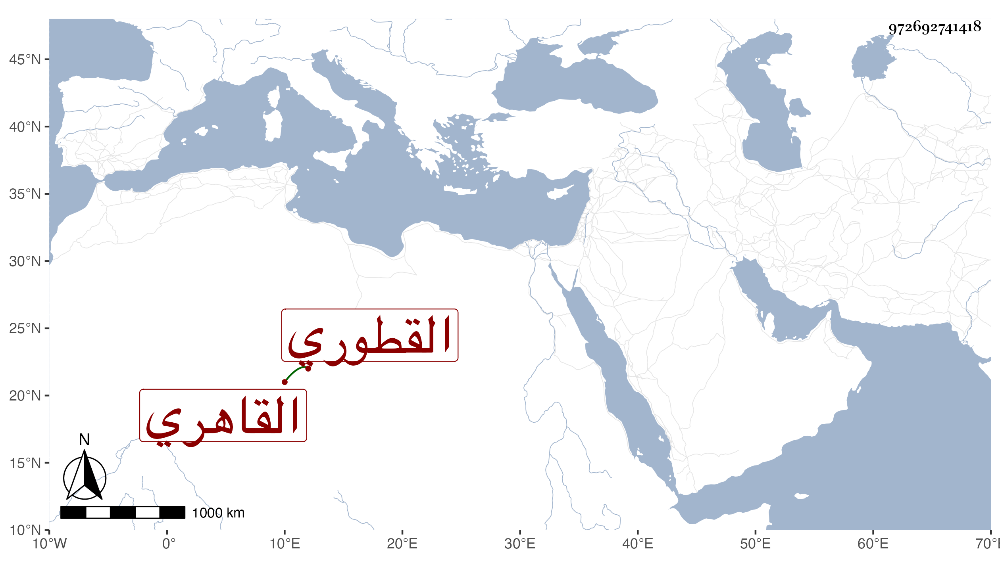

0902Sakhawi.DawLamic.ITO20230111-ara1.EIS1600.972692741418
Biography ID: 972692741418
381
أبو الفتح بن إبراهيم القطوري ثم القاهري ممن قرأ القرآن وجاور مع أبيه في سنة إحدى وخمسين وسمع على أبي الفتح المراغي ثم تكررت مجاوراته بعد ذلك مع ملازمته التكسب في البز وغيره وتودده وعقله وأنشأ دارا حسنة على بركة جناق وربما خطب وقرأ في بعض الجوق ثم ضعف حاله وتحرك مع ذلك في موسم سنة اثنتين وتسعين وهيأ حاله ولم أطرافه بل اكترى فعاقت القدرة بحيث كانت منيته في ربيع الثاني من التي تليها ونعم الرجل كان رحمه الله .
